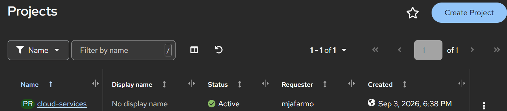
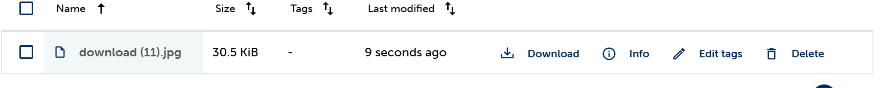

This webpage documents my work for Week 3 of the Cloud Services course. In this assignment.
Many companies use cloud-based email and calendar services because employees can access them from different devices and locations. The company does not need to manage all the email and calendar servers by itself because the cloud provider manages much of the infrastructure. Cloud calendars also make it easier to arrange meetings, send invitations, and share calendars with other employees.
A mid-size company could use Amazon Glacier for long-term backups, archived documents, and other data that needs to be kept for a long time but is not accessed often. Glacier would not be the best choice for files that employees need to access frequently because it is designed for long-term and less frequently accessed data.
Other cloud storage providers can also be used for this purpose, such as Microsoft Azure and Google Cloud. The company can compare storage prices, access times, and features before choosing a suitable service.
A company may maintain its own web server when it needs a high level of control and has the skills and resources to manage the server. However, managing your own server also means taking care of hardware, software, updates, security, and maintenance.
IaaS can be useful when a company wants more control but does not want to manage physical hardware. The cloud provider provides infrastructure such as virtual machines, while the company manages the operating system and software.
PaaS can be useful when the company wants to focus mainly on its application while the cloud provider manages more of the underlying infrastructure. SaaS is useful when the company wants to use a finished software service instead of managing the application and infrastructure itself.
IoT devices such as smart TVs, smart cameras, and other connected home devices need to communicate with services on the Internet. DNS helps these devices find Internet services using domain names. Public DNS resolvers can provide a DNS service that is available from different networks, which can be useful for Internet-connected devices.
I used CSC Rahti to deploy my webpage as a containerized web application. Rahti provides a platform where the application can run without me managing the underlying physical servers.

I used CSC Allas as cloud storage for media used by the webpage. Allas provides S3-compatible object storage, which can be used to store files such as pictures and other media.

This picture is stored in my CSC Allas bucket. I used the picture as media for this assignment and included a copy in the web project so that it can be displayed on the public webpage.
The picture is an example of media stored using CSC Allas. The Allas bucket is used separately from the web application.
GitHub repository: https://github.com/Mishomoon/cloud-services-week2
https://cloud-services-week2-cloud-services.2.rahtiapp.fi
In Week 3, I learned how different cloud services can be used for storage, web services, and Internet communication. I learned about cloud email and calendars, long-term cloud storage, different cloud service models, and DNS. I also practiced using CSC Rahti to deploy a webpage and CSC Allas to store media separately from the application.